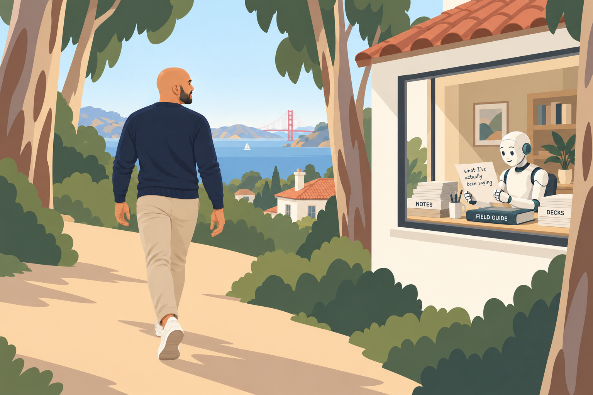

A SIX-WEEK LIVE COHORT WITH DANOOSH KAPADIA
Hand off the
boring work.
In six sessions, you’ll build your own working agent around a task that keeps eating your week. We’ll try things together, and you’ll learn when to trust its work.
Enroll · $750For mid-career professionals who already use ChatGPT or Claude and are wondering what comes next.
Bring the real stuff.
You don’t need to turn up with a polished project. Bring the task you keep putting off, the thing you tried that didn’t work, or the question you haven’t had anyone to ask.
These are live, interactive sessions. We’ll work on our builds, share what we’re finding, and help each other get unstuck. I’ll guide the work, and you’ll learn from the other people in the room as well as from me.
TASKS PEOPLE BRING
The report you rebuild from scratch.
The follow-ups you meant to send.
Seventeen school emails a day, per kid.
Pick something you’d be happy to do less of. We’ll work out which parts an agent can handle, what it needs from you, and what you’ll want to check.
Work and personal life are equally welcome. You can use personal accounts if your company’s tools are off limits.
THE SIX WEEKS
One task.
Six weeks to work it out.
We’ll start with setup and choosing your task, then build on it week by week. Between calls, you’ll try what we’ve covered on your own task. At the next session, we’ll look at what happened together.
- 01
Choose your task and get set up
We’ll look at what an agent can do, get your tools ready, and find a manageable place to start.
- 02
Show it what a good job looks like
Work through how you do the task now. What information matters? What do you know that the agent doesn’t?
- 03
Build the first version
Give it instructions, examples, and useful context. Try it on your task and see what you get.
- 04
Find out where it goes wrong
Test it with the messy cases, compare results, and work out what needs to change.
- 05
Get it doing the work regularly
Learn what’s ready to run on a schedule and where it still needs you to take a look.
- 06
Keep track of what it’s doing
See what ran, what needs attention, and how to keep your agent useful after the cohort ends.
What you’ll take with you
An agent built around a real piece of your recurring work, a way to check its output, and the judgment to know what to hand over next—and what to keep.
WHO’S TEACHING
Why I built this.
I’m Danoosh Kapadia.
I’m an AI strategist and educator in San Francisco. I’ve helped more than 2,000 leaders get fluent with AI, after earlier work at General Assembly, IDEO U, and XPLANE.
+AI is where I bring people together to try it on their own work and lives.
One of my agents read years of my notes and teaching material while I was out on a hike in the Presidio.
Another one created our summer Insta reel. It picked good pictures. It had no idea which ones made the summer memorable.
The build was the easy part. The real work was deciding what to hand over, how much context to give it, and where my judgment still had to show up.
I keep coming back to the same question: what’s helpful, now, for someone with a real job and a real life? That’s what I want us to work on together.

FROM PEOPLE WHO’VE LEARNED WITH ME
“The community helped me move from feeling intimidated to confident—like I’m riding the wave rather than being swept away.”
“Danoosh cuts through the noise, curating exactly what I need to know each week. If I had to replicate what I learn in the group, it would take countless hours.”
“But what keeps me coming back is how quickly everything is advancing. Every week there’s something new, and the community helps me stay up-to-date and confident. Plus, it’s genuinely fun.”
JOIN THE FALL COHORT
Come build with us.
If you already use AI chat and are wondering what the next step is, I’d love to have you join us.
You might run your own business, work inside a company, or be figuring out what comes next. Bring a task from wherever you are.
- Six weekly, 60-minute live sessions
- Hands-on building and help during the calls
- A small group to share questions and compare notes with
- Your own agent to keep working on
$750
USD · One payment
For the full six-session cohort.
You’ll need your own paid Claude or ChatGPT plan ($20 or higher). That subscription is separate.
Mid-October to before Thanksgiving
Thursday or Friday morning, Pacific. We’re choosing the weekly time from the group’s availability.
Secure checkout with Stripe.
If it doesn’t work for you,
you get your money back.
Let me know and I’ll give you a full refund.
A few things you might be wondering.
Do I need to know how to code?
No. You should already be comfortable using ChatGPT or Claude. We’ll work through the agent setup and build together.
What tools do I need?
Your own paid Claude or ChatGPT plan at the $20 level or higher. That subscription is separate from the cohort fee. We’ll cover setup in the first session.
What if I don’t know what to build yet?
Bring a few tasks you’re tired of repeating. We’ll help you choose one that’s useful and manageable.
Can I bring something from my personal life?
Absolutely. School emails, family logistics, and household admin are all welcome. If you can’t connect your company’s tools, you can learn with personal accounts or files you’re allowed to use.
When do we meet?
Once a week for six weeks, from mid-October to before Thanksgiving. Calls are 60 minutes, on a Thursday or Friday morning in Pacific time. The exact time is still being chosen from the group’s availability.
What happens between sessions?
Try what we’ve worked on with your own task, then bring back what happened. Support is during the live calls, where we can look at questions and builds together.
What if the cohort doesn’t work for me?
Let me know and I’ll give you a full refund.